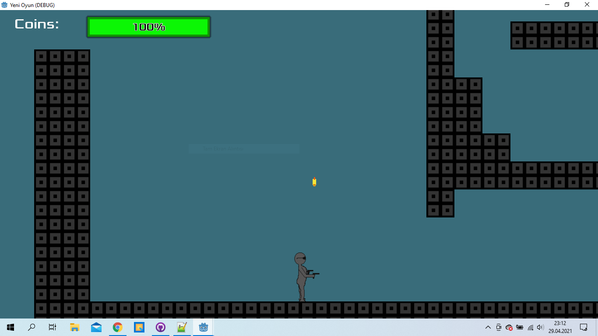

Resul Çalışkan Kimdir?

Ben 06/07/2000 de İstanbul da doğdum. Doğma büyüme İstanbulluyum ama ailem Balkan Türküdür. Aslen Üsküplüyüm.İlk ve orta okulu Hasip Dinçsoy okulunda liseyi de Pertevniyal Lisesinde okudum ve şuan Sakarya Üniversitesinde bir yıl hazırlık okuduktan sonra Bilgisayar Mühendisliği okuyorum.
Neden Bilgisayar Mühendisliği?
Bilgisayarla ilk okulda bilgisayar dersinde tanıştım.Microsoft uygulamaları üzerineydi.Liseye kadar bilgisayar benim için hiçbir şey ifade etmiyordu.Hayalimdeki liseyi kazanmak için çok çalışıp kazandım ama hayat bütün güzellikleri bir arada vermiyor hatta sahip olduklarını götürüyor.Lise hayatım böyle geçerken lise 3 te arduino kulubü açıldı sağolsun arkadışın ısrarıyla bende katıldım ve o zaman hayatımın geri kalanında zevkle yapabileceğim olan bilgisayar mühendisliğini okumaya karar verdim.
Hobilerim
Basketbolu çok severim düzenli bir şekilde pivot mevkinde oynarım bloklamak benim esas hobim diyebilirim.Yüzmeyide severim yüzdükten sonra domates ekmek yemeyi daha çok severim:),diğerlerinden farklı olarak son yıllarda başladığım okçuluk benim bir numaralı zevkimdir.Bir de resim çizmek ve kitap okumak var.Başka şeyler vardır belki ama bence bu kadar yeter.
Hedeflerim
Şimdiye kadar alanımda unity ve godotla amatör bir kaç oyun yaptım.App inventorla kendime ingilizce quizler hazırlamıştım.Ardiuno ile pekte işlevsel olmayan sıradan bir araç yaptım.Gelecek içinse oyun yapmayı istiyorum,bunun yanında başka bir ortamda mobil uygulama yapmak ve liseden beri hayalim olan görme engelli bireyler için yapay zeka (yapay zeka hakkında pek bir fikrim yok)tabanlı bir gözlük yapmak istiyorum.Daha da hedeflerim var ama yazılım alanın genişliğini gördüğüm için yeterlilik elde etmeden atıp tutmak istemiyorum gerçi sıraladağım hedeflerlede de yeterli değilim ama bi şeyler yazmam gerekliyidi:)

Godot ile yaptığım oyun